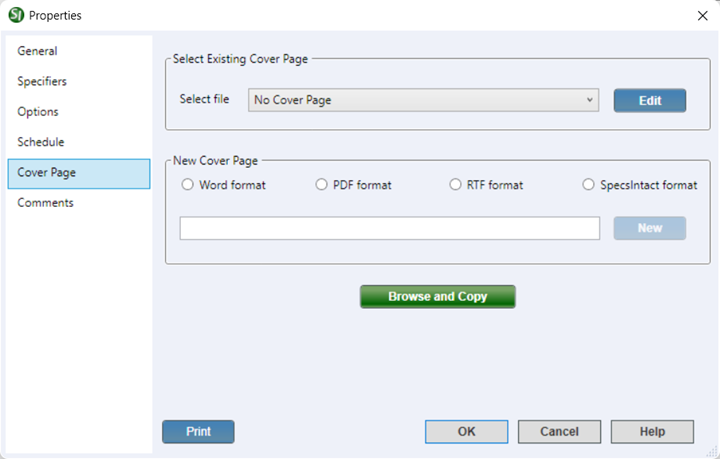

This command can also be executed from the SpecsIntact Explorer's Toolbar or Right-click menu.
The Cover Page tab provides the flexibility to create a new, custom Cover Page or integrate a government-provided Cover Page into an existing Job. This ensures your Job begins with the proper official branding and information, whether you're following governmental standards or creating a customized introduction.
 The available options in SpecsIntact differ between Jobs and Masters, reflecting their distinct purposes and requirements. The Cover Page and Schedule tabs are unique to Jobs.
The available options in SpecsIntact differ between Jobs and Masters, reflecting their distinct purposes and requirements. The Cover Page and Schedule tabs are unique to Jobs.
 When a Job or Master is backed up, all information from these tabs, including comments, is saved in the backup file.
When a Job or Master is backed up, all information from these tabs, including comments, is saved in the backup file.
 Adobe Acrobat is required to create a Cover Page in PDF Format.
Adobe Acrobat is required to create a Cover Page in PDF Format.
 Click the tabbed commands on the image below to see how to use each function.
Click the tabbed commands on the image below to see how to use each function.

- Select Existing Cover Page - Provides the option to select an existing Cover Page from the list or opt for No Cover Page, if one isn't needed.
- Edit Button - Opens the selected Cover Page in the corresponding application, whether it is Microsoft Word, PDF Editing tools (e.g., Adobe PDF, Bluebeem, FoxIt, etc.), a Rich Text Format (RTF) editor, or the SI Editor.
- New Cover Page - Provides the option to create a new Cover Page in the Word format, PDF format, RTF format, or SpecsIntact format, and assign a name.The Properties window simplifies project control by dividing all settings into distinct tabs --six tabs for Jobs and four tabs for Masters. This structure makes it easy to find and configure exactly what you need, with each tab focusing on a specific aspect. These tabs cover general project settings, specifier list management, essential project options, project schedules, and the handling of Cover Pages and SI Documents. Plus, you can easily keep track of changes with date-time stamped comments.
- Browse and Copy button - Opens Windows File Explorer, allowing you to easily locate and copy an existing Cover Page from your system to the current Job. After you select the file, it will automatically open in its corresponding application and automatically populate the name of the Cover Page in the Select file field.
- Print button - Opens the Project Properties Report that displays an all-inclusive export of your project's data, compiling information from each tab into one cohesive document. It offers a detailed summary of the entire project, making it ideal for sharing with your project team to support design review meetings.
Standard Windows Commands
 The OK button will execute and save the selections made.
The OK button will execute and save the selections made.
 The Cancel button will close the window without recording any selections or changes entered.
The Cancel button will close the window without recording any selections or changes entered.
 The Help button will open the Help Topic for this window.
The Help button will open the Help Topic for this window.
Complete the How To Steps once the functionality has been modified by the developers to incorporate the Bugs/Improvements for this dialog.
How To Use This Feature
To Add A New Cover Page:
- In the SpecsIntact Explorer, select a Job, then perform one of the following:
- Right-click and select Properties
- Click the Properties button on the Toolbar
- Select the File menu and select Properties
- On the Properties window, select the Cover Page tab
- Below New Cover Page, select one of the available options (e.g., Word format, PDF format, RTF format, or SpecsIntact format)
- Place your cursor in the text field and type the name for your new Cover Page and click the New button
- When the corresponding application opens, create, save, and close the application
- Once the new Cover Page filename appears in the Select file field, click OK
to Add an Existing Cover Page:
- In the SpecsIntact Explorer, select a Job, then perform one of the following:
- Right-click and select Properties
- Click the Properties button on the Toolbar
- Select the File menu and select Properties
- On the Properties window, select the Cover Page tab
- Below the Select Existing Cover Page, perform one of the following:
- Select the Select file drop-down arrow to select an existing Cover Page from the list
- Click the Browse and Copy button to locate and open the Cover Page in the corresponding application
- Once the Cover Page filename appears in the Select file field, click OK
To Edit A Cover Page:
- In the SpecsIntact Explorer, select a Job, then perform one of the following:
- Right-click and select Properties
- Click the Properties button on the Toolbar
- Select the File menu and select Properties
- On the Properties window, select the Cover Page tab
- Below the Select Existing Cover Page, select the Select file drop-down arrow to select an existing Cover Page from the list
- Once the Cover Page appears in the Select file field, click the Edit button to open the file in the corresponding application
- Modify the Cover Page content, then save and close the application
- Click OK
Users are encouraged to visit the SpecsIntact Website's Support & Help Center for access to all of our User Tools, including Web-Based Help (containing Troubleshooting, Frequently Asked Questions (FAQs), Technical Notes, and Known Problems), eLearning Modules (video tutorials), and printable Guides.